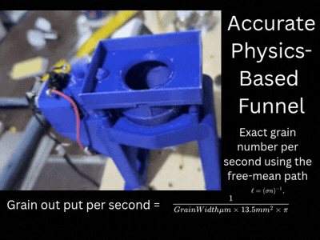

Revolutionizing 3D Printing with the PETamentor3:
The Ultimate Filament Recycler
Imagine turning your everyday plastic bottles into vibrant, colorful 3D printer filament right in your own workshop. With PETamentor3, this isn't just a dream—it's your new reality. As the only color-supporting filament recycler available online, PETamentor3 empowers makers, hobbyists, and professionals to create sustainable, custom-colored filaments for a fraction of the cost of commercial options. And the best part? All parts are free to download and print, making this innovative device accessible to everyone for just about $40 in materials.
What Makes PETamentor3 a Game-Changer?
Plastic waste is everywhere, and traditional recycling often falls short. PETamentor3 bridges that gap by transforming PET plastic bottles—those ubiquitous soda and water containers—into high-quality 3D printer filament. But what sets it apart from other recyclers? It's the ability to infuse your filament with colors using simple, affordable powders like charcoal for deep blacks or iron oxide for rich reds and earth tones.

While other filament recyclers produce plain, colorless strands, PETamentor3 lets you customize your creations with a spectrum of hues. Whether you're printing prototypes, art pieces, or functional parts, colored filament adds that extra flair that makes your projects stand out. And since it's based on the innovative PETamentor2 (a project that sadly went dormant), PETamentor3 builds on proven technology with improvements for better reliability and ease of use.
Affordable Innovation: Build It for Under $40
One of the most enticing aspects of PETamentor3 is its cost-effectiveness. With a total build cost of approximately $40, this device democratizes advanced filament recycling. No expensive machinery or proprietary parts required—just common hardware store items and 3D-printed components that you can fabricate yourself.
The beauty lies in its simplicity. The core components include:
- 3D-Printed Parts: All structural elements, from the funnel to the spooler, are designed for easy printing on any standard 3D printer.
- Off-the-Shelf Hardware: Motors, shafts, and fasteners that you can source locally or online.
- Recycled Materials: The plastic bottles you process become the filament itself.
This approach not only keeps costs low but also promotes a circular economy where waste becomes a valuable resource.
How PETamentor3 Works: From Bottle to Brilliant Filament
The process is straightforward yet ingenious. Start by collecting clean PET bottles—rinsed and dried. Feed them into the shredding mechanism, where they're broken down into small flakes. These flakes are then heated and extruded through a custom die, forming the filament strand.
The magic happens during extrusion. By mixing in color powders like charcoal (for matte blacks) or iron oxide (for vibrant reds), you can create filaments in shades that match your creative vision. The device handles the precise temperature control and extrusion speed needed to produce consistent, high-quality filament that works seamlessly with your 3D printer.
Compared to PETamentor2, the predecessor that inspired this project, PETamentor3 features enhanced stability and user-friendly design. The original project provided the foundation, but PETamentor3 refines it with better part tolerances, easier assembly, and improved color mixing capabilities.
Endless Possibilities: What You Can Create
With PETamentor3, your 3D printing horizons expand dramatically. Imagine printing:
- Custom-Colored Prototypes: Match exact brand colors for product development.
- Artistic Sculptures: Infuse personality into your creations with unique hues.
- Educational Models: Teach sustainability while demonstrating engineering principles.
- Functional Parts: Durable, recycled components for everyday use.
The ability to produce colored filament opens doors to applications that were previously cost-prohibitive or impossible with standard recyclers. And since you're using recycled plastic, you're contributing to environmental conservation while saving money on filament costs.
Sustainability Meets Creativity
In a world grappling with plastic pollution, PETamentor3 represents a beacon of hope. By converting waste into useful material, you're not just recycling—you're upcycling. Each bottle you process becomes part of something new and valuable.
The environmental impact is significant. PET bottles, which often end up in landfills, are transformed into filament that can be used repeatedly. And with the color-adding feature, you're encouraging more people to embrace recycled materials in their creative pursuits.
Common powders for coloring include:
- Charcoal: For deep, professional-looking blacks
- Iron Oxide: Red, yellow, and brown tones for earthy colors
- Titanium Dioxide: Bright whites
- Other Pigments: Experiment with food coloring or craft store powders for custom shades
These affordable additives make color customization accessible to all.
Why Choose PETamentor3 Over Commercial Filament?
Commercial filament can cost $20-50 per kilogram, and colored varieties are even pricier. With PETamentor3, you can produce filament for pennies per meter, while giving new life to plastic waste. The quality rivals commercial options, and the satisfaction of creating your own materials is unmatched.
Get Started Today: Download, Print, and Create
Join thousands of makers who are already recycling smarter. Your next masterpiece awaits—download PETamentor3 today!